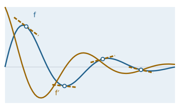

Reverse-mode differentiation in pure Java – from tensor to language model
Function overview for the presentation of the envisionz framework, as of 28 Sep 2026. Reverse-mode automatic differentiation,
transformer building blocks, optimiser and weight storage, tokeniser and language-model training, a differentiable spectral model
of the formant voice, corpus vetting and an optional float matrix path with the companion module envisionz-framework-autograd-vector.
For each method: purpose, API, use in the framework, applications, examples. The examples are shortened.
Some API names are German (e.g. TextKorpus = text corpus, SprachmodellTrainer = language-model trainer, kodiere = encode, schnellesMatmul = fast matmul); they are shown unchanged.

Tensor and Ops: a single call of backward() yields f′ at all sample points.Ops, each with a backward pathjdk.incubator.vectorPrinciples of the module
Random. The parallel matrix product sums in the same order as the serial one, and the weight file round trip is bit-exact.Ops.schnellesMatmul (off by default), and then only forwards. The backward pass always stays double.Tensor, operations, gradient check envisionz.autograd
The graph is built during the forward pass. backward() sorts it topologically, without recursion, and walks it in reverse. Gradients accumulate, so shared weights collect every contribution. Reverse mode: Background, formulas and pseudocode → Matrix product: Background, formulas and pseudocode → Derivatives: Background, formulas and pseudocode → Gradient check: Background, formulas and pseudocode →
Tensor and Ops – 37 operations in both directions
Flat double[] with an int[] shape, row-major. Arithmetic, matrix product (2D, batch × shared matrix, batch × batch), reshaping, nonlinearities, normalisation, embedding, losses. Above a threshold the matrix product is spread over all cores; the gradient with respect to b is split over k rather than m so that no work item writes to another's row.
Methods
Tensor.of(data, shape…),param(…),zeros(requiresGrad, shape…),scalar(v)backward(),zeroGrad(),detach(),grad,shape,dataadd,sub,mul,div,scale,addScalar,matmul,reshape,permute,transposeLast,sliceLastDim,concatLastDimsoftmaxLastDim,gelu,relu,tanh,sigmoid,softplus,silu,swiglu,sin,cos,exp,log,sqrt,square,scalarMinus,dropoutlayerNorm,rmsNorm,embedding,sum,mean,crossEntropyLoss(fused with softmax),mseLoss,l1LossOps.parallelMatmulThreshold(250,000 multiplications)
Used in
What for
Any model that learns from gradients: small networks, transformers, fitting physical models to measurements.
Example – fitting a small network with Adam
Random rnd = new Random(42);
Linear l1 = new Linear(rnd, 2, 32), l2 = new Linear(rnd, 32, 1);
List<Tensor> p = new ArrayList<>(l1.parameters());
p.addAll(l2.parameters());
Adam opt = new Adam(p, 1e-2);
for (int i = 0; i < 2000; i++) {
opt.zeroGrad();
Tensor loss = Ops.mseLoss(l2.forward(Ops.tanh(l1.forward(x))), y); // x [n,2], y [n,1]
loss.backward();
opt.step();
}GradCheck – analytic versus numerical gradient
Central differences at randomly chosen components. The step size is relative to the value (h_i = max(h, relStep·|x|)): a fixed step of 1e-5 on a 700 Hz formant frequency would otherwise lose several digits to cancellation.
Methods
check(params, lossFn)– usual settingscheck(params, lossFn, h, relStep, maxProbes, seed)Report:probes(),maxRelError(),meanRelError(),passed(tol)
Used in
What for
Securing every new operation and model before the first run; catching faults that otherwise surface only after days of training.
Example – checking a composition
Tensor w = Tensor.param(new double[] {0.3, -1.2, 0.7, 2.0}, 2, 2);
Tensor x = Tensor.of(new double[] {1, 2, 3, 4}, 2, 2);
GradCheck.Report r = GradCheck.check(List.of(w), () -> Ops.mean(Ops.tanh(Ops.matmul(x, w))));
boolean gut = r.passed(1e-6);relu and l1Loss central differences are themselves wrong. The probes start away from zero there.Network blocks and transformer envisionz.autograd.nn
Module, Linear, Embedding, LayerNorm, RmsNorm, Init
Module collects the parameters in a fixed order, without reflection. That order is also the storage order of the weight file. Init offers Xavier, He, normal, uniform and constant, always with a Random passed in. Building blocks and initial values: Background, formulas and pseudocode → Attention: Background, formulas and pseudocode → Encoder and language head: Background, formulas and pseudocode →
Methods
parameters(),parameterNames(),parameterCount(),zeroGrad()new Linear(rnd, in, out[, withBias, heInit]),forward(x)new Embedding(rnd, count, dim),forward(int[] ids)new LayerNorm(d[, eps])(eps 1e-5),new RmsNorm(d[, eps])(eps 1e-6)Init.xavier(rnd, fanIn, fanOut),he(…),normal(rnd, σ, shape…),uniform,constant
Used in
What for
The basic blocks of any network: mapping features, embedding symbols, bringing activations to a fixed scale.
MultiHeadAttention, EncoderBlock, TransformerEncoder, PositionalEncoding, LanguageModelHead
Attention with H heads and scaling by 1/√Dh; additive mask with −1e9 rather than −∞, because ∞ · 0 would give NaN in the backward pass. The block is pre-norm, stable without a tuned warm-up. Two variants: CLASSIC (LayerNorm and GELU) and MODERN (RMSNorm and SwiGLU). Sinusoidal positional encoding without learnable parameters. The language head can share the embedding matrix; it then appears exactly once in parameters().
Methods
new TransformerEncoder(rnd, layers, dModel, heads, dFF, dropout[, variant]),forward(x, mask, rnd, training)MultiHeadAttention.causalMask(T),causalPaddingMask(valid),paddingMask(valid)new PositionalEncoding(maxLen, d),add(x)new LanguageModelHead(embedding, withBias)(tied) or(rnd, vocab, dModel, withBias),isTied()SwiGluFeedForward.hiddenForEqualParams(dFF)– rounds 2/3 · dFF down so thatMODERNis not larger thanCLASSIC
Used in
What for
Language models, sequence-to-sequence mapping (e.g. phoneme sequence to duration and fundamental frequency for the voice), surrogate models over sequences.
Example – small language model with a tied output head
Embedding emb = new Embedding(rnd, vocab, 64);
PositionalEncoding pos = new PositionalEncoding(128, 64);
TransformerEncoder enc = new TransformerEncoder(rnd, 2, 64, 4, 256, 0.1, EncoderBlock.Variant.MODERN);
LanguageModelHead kopf = new LanguageModelHead(emb, false);
Tensor h = enc.forward(pos.add(emb.forward(ids)), MultiHeadAttention.causalMask(ids.length), rnd, true);
Tensor loss = Ops.crossEntropyLoss(kopf.forward(h), ziele);ToyProsody – learning proof with non-local rules
Generated phoneme sequences with duration and fundamental frequency per position. The rules need look-back, look-ahead and the sentence length; a question is recognisable only from the last symbol. Plus a per-symbol lookup table as baseline: it shows what attention actually contributes.
Methods
generate(rnd, count, minWords, maxWords)→Sample(ids, targets, question)labels(seq, question),lookupBaseline(train),isVowel,isFullVowel
Used in
What for
Precursor of the voice model (phonemes to duration and F0); proof that the transformer does more than a table.
Optimiser and weight storage envisionz.autograd.optim · envisionz.autograd
Adam – with decoupled weight decay and gradient clipping
Adam in the AdamW form, global norm clipping, warm-up with cosine decay. step() returns the gradient norm before clipping, the most useful sign of a run about to diverge. The state can be saved and restored. Adam: Background, formulas and pseudocode → Weight file: Background, formulas and pseudocode →
Methods
new Adam(params, lr); fieldslearningRate,beta1,beta2,eps,weightDecay,maxGradNormzeroGrad(),step(),gradNorm(),steps()state()→State(step, m, v),restore(s)Adam.schedule(step, warmup, total, peakLr, minLr)
Used in
What for
Every training run in the module; the learning-rate schedule depends on the total number of steps.
WeightIO and Checkpoint – bit-exact weights with provenance
Binary format with magic EVZAGW01, shapes per tensor, values as double in parameters() order and an FNV-1a checksum. Read through a mapped file inside an Arena that releases it immediately (otherwise the file would stay locked on Windows). Version 2 carries provenance: model id, ancestor, architecture, step count, note. Without a common ancestor models cannot be merged. A checkpoint writes two files, .evzw (weights, first) and .evzo (optimiser state).
Methods
WeightIO.save(path, params[, prov]),load(path, params),readHeader(path)Provenance(modelId, parentId, architecture, steps, note),none(),sharesAncestorWith(o)Checkpoint.save(weights, params, prov, opt),load(weights, params, opt)→Loaded,optimizerPath(weights)
Used in
What for
Interrupting long runs and resuming them bit-identically; shipping and comparing models; recording the family tree of models.
Example – writing a checkpoint and resuming later
WeightIO.Provenance prov = new WeightIO.Provenance("tiny-01", "", "d64-L2", opt.steps(), "trial run");
Checkpoint.save(Path.of("modell.evzw"), params, prov, opt); // writes .evzw and .evzo
Checkpoint.Loaded l = Checkpoint.load(Path.of("modell.evzw"), params, opt);Sequence training and sampling envisionz.autograd.lm
SequenceTrainer – resumable training on sequences
The trainer only knows a recipe that turns an input and a target sequence into a loss. Batches arise by accumulating gradients and dividing by the batch size, without padding and without a mask. trainResume takes the optimiser state and the completed epochs and replays the shuffle of those epochs: the resumed run is bit-identical to the uninterrupted one. Sequence training: Background, formulas and pseudocode → Sampling: Background, formulas and pseudocode →
Methods
train(params, lossFn, inputs, targets, cfg, listener, cancelled, checkpoint, prov)→ResulttrainResume(…, opt, doneEpochs, totalEpochs)Config:epochs,batchSize,peakLr,minLr,warmup,weightDecay,maxGradNorm,shuffleSeed,checkpointEvery,validFractionchunk(ids, laenge, inputsOut, targetsOut)– target shifted by exactly one
Used in
What for
Language and sequence models with cancellation, checkpoints and a listener for the GUI.
Example – training with a recipe
SequenceTrainer.Config cfg = new SequenceTrainer.Config();
cfg.epochs = 5;
SequenceTrainer.Result r = SequenceTrainer.train(params,
(ids, ziel, training) -> Ops.crossEntropyLoss(logits(ids, training), ziel), // logits(…) illustrative
eingaben, ziele, cfg, null, null, Path.of("lauf.evzw"), WeightIO.Provenance.none());lm.Sampler – temperature, top-k, top-p, repetition penalty
Picks the next token from the logits of the last position. Randomness comes from the generator passed in: same seed, same text.
Methods
next(logits, opt, rnd),next(logits, bisher, anzahl, opt, rnd)Options:temperature,topK,topP,repetitionPenalty;Options.greedy()
Used in
What for
Generating text from a trained model and seeing whether it has learned anything.
Example – next token with a repetition penalty
Sampler.Options opt = new Sampler.Options();
opt.temperature = 0.8; opt.topK = 40; opt.repetitionPenalty = 0.3;
int naechstes = Sampler.next(logits, bisher, n, opt, rnd);Text, tokeniser, language model envisionz.autograd.text
BytePairEncoder – byte-level byte-pair encoding
The 256 byte values as the base: umlauts and everything else without special handling. Pre-tokenisation by code point, so characters outside the BMP do not fall apart. On a tie the smaller pair wins, so the vocabulary is reproducible. The file is text; the merges stay hand-checkable. Byte pair encoding: Background, formulas and pseudocode → Language model: Background, formulas and pseudocode → Command examples: Background, formulas and pseudocode →
Methods
lerne(texte, zielVokabular, minHaeufigkeit, sonderSymbole)(learn)kodiere(text),dekodiere(ids),zeige(id)(encode, decode, show)vocabSize(),mergeCount(),specialId(name),speichere(pfad),lade(pfad)(save, load)
Used in
What for
Splitting German technical texts with compound words into tokens, losslessly in both directions.
Example – learning and using the tokeniser
BytePairEncoder bpe = BytePairEncoder.lerne(texte, 8000, 2, List.of("<s>", "<pad>"));
int[] ids = bpe.kodiere("Der Verdichter pumpt.");
String zurueck = bpe.dekodiere(ids);
bpe.speichere(Path.of("bpe.txt"));TextKorpus, SprachmodellTrainer, text.Sampler – a language model from a text file
TextKorpus reads block by block and cuts at word boundaries, before the separator; the pairs are offset by exactly one token. The trainer assembles embedding, positional encoding, encoder and tied head, and aborts if the starting loss lies more than 1.0 below ln(V) (the model then sees its target) or NaN appears. The sampler rejects temperature 0 and points to waehleGroesstes (pick largest).
Methods
new TextKorpus(datei, bpe[, sequenzLaenge, blockZeichen]), iteration overPaar(vorher, nachher),alle(hoechstens),paareGeschaetzt()new SprachmodellTrainer(vokabular, Einstellungen),trainiere(Iterable<Paar>)→Ergebnis(perplexitaet()),vorwaerts(ids, maske, rnd, training),parameterZahl()new Sampler(saat),naechstes(logits, temperatur, topK),waehleGroesstes(logits),erzeuge(modell, start, anzahl, temperatur, topK)
Used in
What for
A trial run on TinyStories with published reference values; later technical corpora.
Example – training and letting it continue a text
SprachmodellTrainer.Einstellungen e = new SprachmodellTrainer.Einstellungen();
e.dModell = 64;
SprachmodellTrainer lm = new SprachmodellTrainer(bpe.vocabSize(), e);
SprachmodellTrainer.Ergebnis erg = lm.trainiere(new TextKorpus(Path.of("tinystories.txt"), bpe));
int[] text = new Sampler(7L).erzeuge(lm, bpe.kodiere("Once upon a time"), 50, 0.8, 40);lm.SequenceTrainer with lm.Sampler (used by app-neural, sequences in memory) and text.SprachmodellTrainer with text.Sampler (streams from the file, no callers outside yet).IntentDataGenerator – training data for command recognition from templates
Templates with slots yield thousands of labelled examples with synonyms, politeness forms, filler words, lower case, missing punctuation and deliberate typos. Slot values are protected from synonym substitution. The split is by template, not by example; otherwise the evaluation measures only robustness to typos.
Methods
new IntentDataGenerator(seed),slot(name, werte…),synonym(wort, alternativen…),prefix(…),suffix(…)- rates
typoRate,prefixRate,suffixRate,lowercaseRate,dropPunctRate generate(templates, proTemplate),generateSplit(templates, proTemplate, train, valid, seed),missingIntents(split)readTemplates(pfad),writeSamples(pfad, samples)
Used in
What for
Commands to an own application for which no ready corpus exists.
Example – templates into three sets
IntentDataGenerator g = new IntentDataGenerator(1L)
.slot("datei", "Kennfeld", "Verdichterkarte")
.synonym("öffne", "lade", "zeige");
List<List<IntentDataGenerator.Sample>> teile =
g.generateSplit(IntentDataGenerator.readTemplates(Path.of("vorlagen.txt")), 50, 0.8, 0.1, 7L);Differentiable spectral model of the formant voice envisionz.autograd.dsp
Analysis by synthesis: the spectrum of the formant synthesiser from framework-voice as a differentiable function of its parameters. Formants can then be fitted to a recording, and the targets found are ones the synthesiser can actually realise. Filter and source: Background, formulas and pseudocode → Spectral fitting: Background, formulas and pseudocode → Frame sequence: Background, formulas and pseudocode →
FormantBankSpectrum and SourceSpectrum – filter and source in the frequency domain
The parallel formant bank has a closed form in the frequency domain, with no backpropagation through the recursion. The coefficients match voice.core.Formant#set one to one, plus lip radiation 1 − 0.96 z−1. Arbitrary frequency grids are allowed, e.g. only the harmonics. The source: Rosenberg pulse, tilt in dB/octave, coloured noise.
Methods
new FormantBankSpectrum(fs, bins)or(fs, freqsHz)response(freqs, bws, gains),powerSpectrum(…),logSpectrumDb(…, eps),biquad(f, bw),clampInPlaceDEFAULT_BRANCH_GAINS,defaultGains(n, altSign)SourceSpectrum.rosenbergPower(f0, oq),tiltPower(slope),noisePower(color),power(…)
Used in
What for
Obtaining formant targets from recordings for training the voice model.
SpectralFit, FrameFit, FrameSequenceFit, FrameAnalyzer
Fitting with separate Adam instances for frequencies, bandwidths and gains (their magnitudes differ by a factor of 1000), clamping to the range the synthesiser accepts, F1 < F2 < F3 with minimum separation, multi-start. Over a sequence of frames: warm start along time, blocks in parallel, a derailed frame is redone cold. fitFast evaluates only at the harmonics and is bit-identical to fit.
Methods
SpectralFit.fit(model, targetDb, initF, initBw, initGain, opt),fitMultiStart(…),spreadStarts(n, fMin, fMax, variants)FrameFit.fit,fitFast,fitMultiStart,spreadStarts– source times filterFrameSequenceFit.fitAll(bank, src, analyzer, signal, f0, …, opt)→SequenceResult,medianRmsDb()FrameAnalyzer:powerSpectrum,envelopeDb,harmonicPeaks,harmonicBins,averagePower- Verification aids:
ReferenceBiquad(copy ofvoice.core.Formant),ReferenceVoice,Fft
Used in
What for
Formant trajectories from a speech corpus as learning targets; proof that the model describes the same filter as the synthesiser.
Example – fitting five formants to a measured spectrum
FormantBankSpectrum bank = new FormantBankSpectrum(16000, 2049);
SpectralFit.Result r = SpectralFit.fitMultiStart(bank, zielDb,
SpectralFit.spreadStarts(5, 200, 5000, 8), startBw,
FormantBankSpectrum.DEFAULT_BRANCH_GAINS, new SpectralFit.Options());
double[] f = r.freqs(); // r.rmsDb(): residualLoading and vetting a speech corpus in advance envisionz.autograd.corpus
CorpusLoader and G2pCoverage
Reads the HUI layout (metadata.csv with a pipe as separator, plus wavs/) with its own WAV reader, which walks the chunks rather than assuming fixed offsets (8/16/24/32-bit integer, 32-bit float). The summary warns below 22 kHz. G2pCoverage checks before training whether a grapheme-to-phoneme converter copes with the text: unknown characters, phonemes per character, empty conversions. The converter is passed as a function, so the module does not depend on framework-voice. Background, formulas and pseudocode →
Methods
CorpusLoader.load(dir)→Entry(id, rawText, normalizedText, audio),readWav(file)→Audio,summary(eintraege, stichprobe)G2pCoverage.check(texte, bekannt, conv)→Report(ok()),GERMAN_BASE
Used in
What for
Vetting an audiobook corpus before hours of compute go into faulty phoneme targets.
Example – inspecting a corpus
List<CorpusLoader.Entry> e = CorpusLoader.load(Path.of("hui/eva_k"));
System.out.println(CorpusLoader.summary(e, 20));Single-precision matrix kernels and Vector API envisionz.autograd.fast · envisionz-framework-autograd-vector
A second compute path in float, selectable via ServiceLoader. The Vector API is an incubator module in OpenJDK and needs --add-modules jdk.incubator.vector at compile and run time. That is why its kernel lives in a separate project; if it is absent, the built-in kernel runs. Background, formulas and pseudocode →
MatmulKernel, Kernels, BlockedKernel, FloatKernels
Kernels takes the available kernel with the highest priority; the built-in blocked kernel has priority 0. A provider that fails to load does not take the core down (Throwable is caught). The forward step of Ops.matmul is connected: from Ops.schnellesMatmulAb (1,000,000 multiplications) and only with Ops.schnellesMatmul = true.
Methods
MatmulKernel:name(),priority(),isAvailable(),matmul(a, b, c, M, K, N),matmulNT(a, bT, c, M, K, N)– add intocKernels.kernel(),verfuegbare()(available),setKernel(k),beschreibung()(description)FloatKernels.matmul,matmulNT,matmulNaiv,toFloat,toDouble; block sizesblockM,blockK,blockN
Used in
What for
Training runs with millions of parameters; gradient checking and bit-exact comparisons stay on the double path.
Example – switching on the fast path and logging it
Ops.schnellesMatmul = true; // forward only, only from Ops.schnellesMatmulAb
System.out.println(Kernels.beschreibung()); // e.g. "Matrixkern: Vector API (8 float)"VectorKernel – envisionz-framework-autograd-vector
The only class of the companion module, registered under META-INF/services with priority 100; available when the preferred vector width is greater than 1. matmulNT computes four output columns at once, without fma, and is therefore bit-identical to the single-column version. Measured on the target machine (Core Ultra 7 258V, AVX2, 8 float): 1.3 to 2.2 times faster than one column. A masked tail was measured and not adopted.
Methods
matmul,matmulNT,name()(with width),priority()= 100VectorKernel.vectorWidth()(8 with AVX2, 16 with AVX-512),vectorBits()
Used in
What for
Explicit SIMD that the JIT does not produce for these loops by itself; according to the documentation usable in native-image since GraalVM 25.
Example – starting with the vector kernel
java --add-modules jdk.incubator.vector \
-cp envisionz-framework-autograd/bin:envisionz-framework-autograd-vector/bin …Usage matrix in the framework
Which modules use which parts today, counted in the source code (probes excluded).
| Module | Tensor & Ops | Network blocks | Sequence training | Text | Optimiser & storage | Spectral model | Corpus | Matrix kernels | What for |
|---|---|---|---|---|---|---|---|---|---|
| app-neural | ● | ● | ● | ● | Language-model workflow: tokeniser, model, training, text probe | ||||
| framework-autograd-vector | ● | Vector kernel as ServiceLoader provider |
GradCheck and the weight storage are verified but not connected outside the probes; Adam and the storage run inside the trainers. Obvious next steps: the run on the real speech corpus (stage 1: duration and fundamental frequency) and the connection to framework-voice.